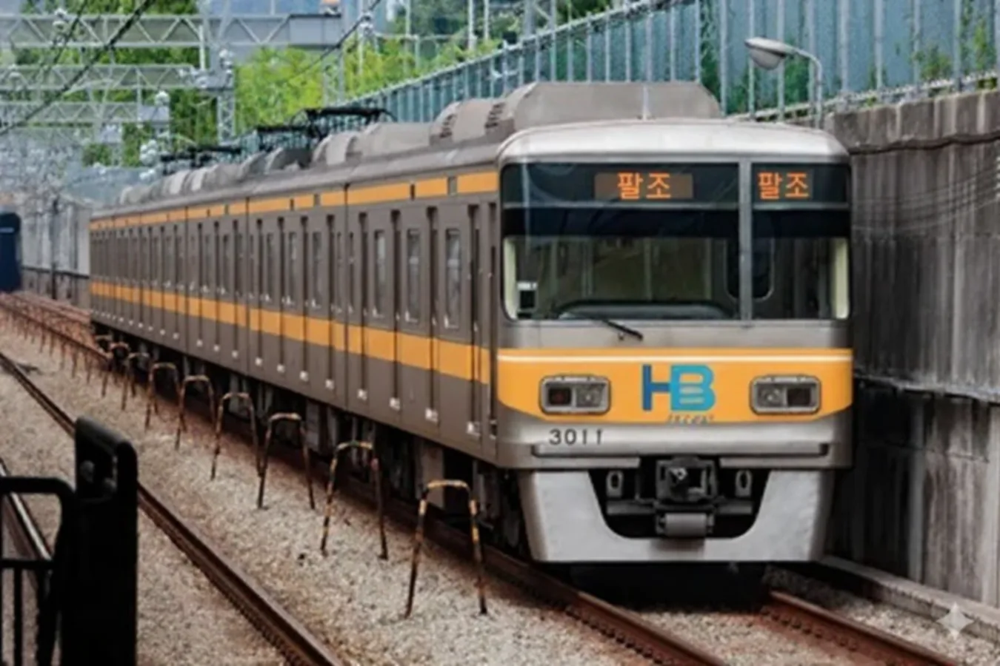
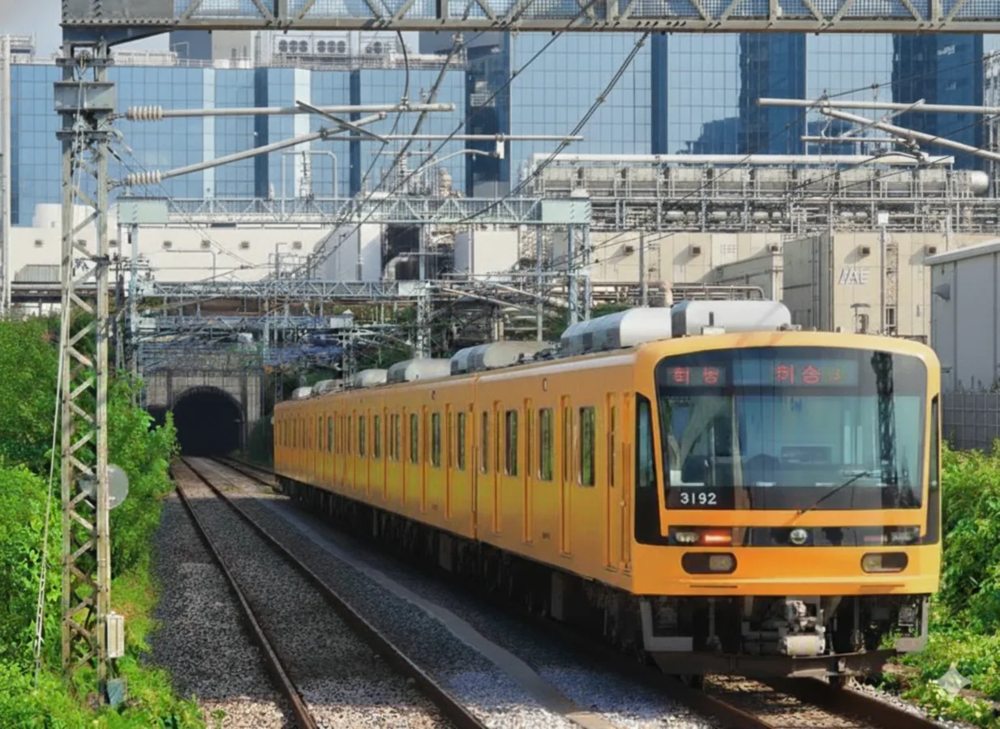
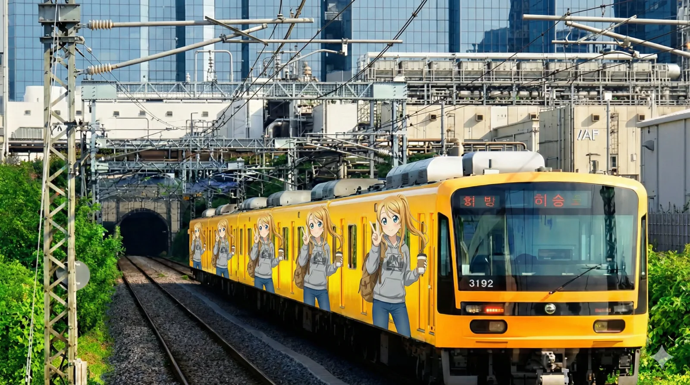
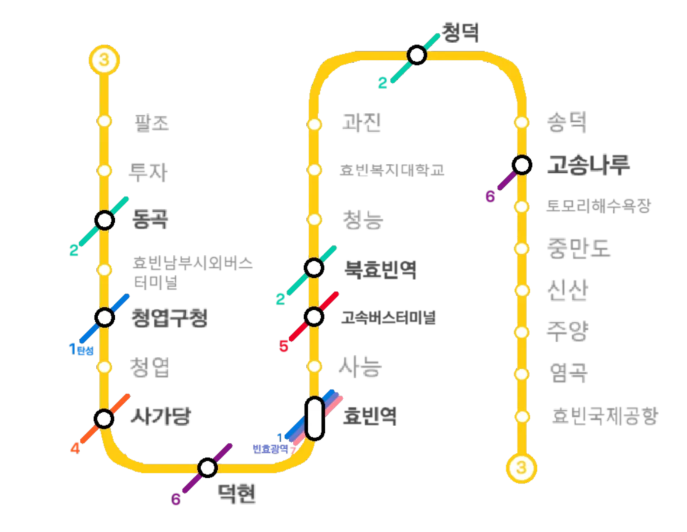

|
|||
|
 효빈교통공사 3000호대 전동차 (1세대)
 효빈교통공사 3000호대 전동차 (2세대)
 촬영지: 주길차량사업소
3호선 공식 캐릭터 박라미 래핑열차 |
|||
| 노선도 | |||
|---|---|---|---|
|
 |
|||
| 노선 정보 | |||
| 노선 분류 | 도시철도, 공항철도 | ||
| 차량 분류 | 대형 중전철 (공항 수하물 대응 특화) | ||
| 구성 노선 |
효빈 도시철도 3호선 (팔조-북효빈) 강빈선 공용구간 (북효빈-염곡) 효빈 도시철도 3호선 (염곡-효빈공항) |
||
| 기점 | 팔조역 | ||
| 종점 | 효빈국제공항역 | ||
| 역 수 | 24개 | ||
| 상징색 | 노란색 (#FFCC11) | ||
| 개통일 | 1994년 2월 9일 (31주년) | ||
| 소유자 | 효빈광역시 (강빈선 공용구간: 국가철도공단) | ||
| 운영사 | 효빈교통공사 | ||
| 사용 차량 | 효빈교통공사 3000호대 | ||
| 차량기지 |
팔조차량사업소[1] 주길차량사업소 |
||
| 노선 제원 | |||
| 노선연장 | 32.61km | ||
| 궤간 | 1,435㎜ (표준궤) | ||
| 선로구성 | 복선 (※ 북효빈~염곡 급행전용 복복선화 공사 중) | ||
| 급전방식 | 직류 1,500V 가공전차선[2] | ||
| 신호방식 | Kyosan Signal ATC/ATO | ||
| 최고속도 | 110㎞/h (공항급행 운용) | ||
| 표정속도 | 30.7㎞/h (완행) 55.4㎞/h (급행) | ||
| 통행방향 | 우측통행 (강빈선 직결 한정 좌측 꽈배기굴 존재) | ||
| 지상구간 | 신산 ↔ 염곡 | ||
| 개통 연혁 |
1994.2.9 (1차) 팔조 ↔ 고송나루 2004.3.7 (2차) 고송나루 ↔ 효빈국제공항 2018.8.21 신산역 추가 개통 2023.3.31 주양역 추가 개통 |
||

1. 개요
효빈 도시철도의 핵심 남북 횡단 노선이자, 효빈권 전철의 핏줄과도 같은 공항철도 운행 계통이다. 운영기관은 효빈교통공사이며 운행하는 열차는 무거운 캐리어 거치와 대량 수송이 가능하도록 널찍하게 특별 설계된 효빈교통공사 3000호대 전동차(대형 중전철)이다. 통행방식은 기본적으로 우측통행을 따르나, 강빈선 공용구간(일반철도) 합류 지점에서 입체교차(꽈배기굴)를 통해 강제로 좌측통행으로 일시 전환되는 묘미가 있다. 노선색은 ● 노란색(#FFCC11)이며, 이 색에 담긴 뜻은 찬란한 '황금'과 도시의 '풍요로움'이다.
효빈시 심장부 도심에서 외곽의 거대 공항을 다이렉트로 이어주는 단 하나뿐인 철도 노선이기 때문에, 캐리어를 덜덜 끌고 다니는 내외국인 관광객, 피곤에 쩔은 공항 상주직원, 그리고 도심을 남북으로 가로지르는 수많은 출퇴근 통근러들로 인해 1년 365일 미어터지는 효빈시 최고의 황금 노선이자 공기업 수익의 든든한 효자 노선으로 불린다. 모든 인프라와 설계가 "공항 이동 특화"에 맞춰진 점이 이 노선의 알파이자 오메가다.
2. 건설 목적
2.1. 도시 남/북부 이동수요 획기적 활성화
이전에 먼저 지어졌던 구형 전차와 1호선, 2호선은 남북 횡단이 아닌 주로 동서 지역 연결과 도심 내부 순환만을 목적으로 건설되었다. 이로 인해 정작 도시의 남부와 북부를 오가려는 시민들의 이동은 치명적으로 어렵고 고통스러웠다. 전차는 노선 자체가 국지적이었고, 1호선은 환승 저항이 심했으며, 2호선은 원형으로 뱅글뱅글 돌아가서 시간 낭비가 심했다. 3호선은 이러한 묵은 갈증, 즉 남부와 북부 간 다이렉트 수직 이동 수요를 단숨에 뚫어주기 위해 기획되었다. 남쪽 끝 창전지구 바로 옆의 팔조동에 차량기지를 박고, 청엽지구, 철도 심장부 효빈역(초대형 환승거점), 과진지구, 청덕지구를 거쳐 최북단 고송신도시까지 한 방에 시원하게 뚫어주는 척추 역할을 완벽하게 수행한다.
2.2. 효빈국제공항 이전 연계 및 거주민 보상책
기존 안천구 광상동과 천본동에 있던 구(舊) 공항은 군사시설과 지나치게 인접한데다, 90년대 이후 폭발적으로 늘어난 해외여행 국제여객 수요를 감당하기엔 활주로와 터미널 규모가 턱없이 옹졸했다. 또한 주변에 바짝 붙은 이자지구와 안천지구 주민들의 살인적인 비행기 소음 민원이 폭주했다. 이에 따라 효빈국제공항을 외곽인 덕북 기도군 해안가 갯벌을 매립하여 대규모로 확장 이전하는 프로젝트가 결정되었다.
하지만 공항이 쌩뚱맞은 외곽으로 빠지면서 도심 접근성이 수직 낙하하는 치명적인 부작용이 예견되었다. 이를 한 방에 해결하기 위해 "캐리어 덜덜 끌고 도심 한복판에서 공항 터미널까지 30분 컷"이라는 야심 찬 슬로건 아래, 도심 남북을 관통하는 3호선을 그대로 공항까지 끌고 가는 연장 방안이 채택되었다. 마침 국가철도공단에서 1990년부터 한창 삽질 중이던 일반철도 강빈선과 경로가 완벽히 겹쳤기에, 북효빈역부터 염곡역까지의 긴 구간을 아예 강빈선 선로와 공용(직결)으로 쉐어하도록 설계하여 어마어마한 토목 건설비를 획기적으로 아꼈다. 이후 염곡역을 지나면 강빈선 본선에서 따로 분기되어 효빈국제공항으로 바로 꽂히도록 지어졌다. 이때만 해도 이 공용구간이 훗날 관제사들을 단체로 원형탈모에 걸리게 만드는 지옥의 헬게이트가 될 줄은 아무도 몰랐다.
또한 신공항 이전으로 인해 삶의 터전을 잃은 공항 부지 수용 거주민들과, 새롭게 대규모로 조성된 기도군 염곡읍 일대의 공항 배후 신도시(신산지구, 주양지구) 주민들에 대한 교통 인프라 보상책의 일환으로 신산역(2018년 개통)과 주양역(2023년 개통)이 중간에 추가로 신설되며 지금의 모습을 갖추었다.
3. 역사
1990년 초, 원래 3호선은 4호선 다음으로 건설 후순위에 밀려있던 찬밥 신세의 노선이었다. 그러나 2001년 이전을 조기 확정한 효빈국제공항의 최악의 도심 접근성 문제와, 버스 노선의 헬게이트급 혼잡으로 인해 상권이 처참하게 죽어가던 사능동의 도심 공동화 현상을 막기 위해 긴급 심폐소생술 격으로 공사 순위가 대폭 앞당겨졌다. 그 결과 1990년 2월, 1단계 도심 구간(팔조 ↔ 고송나루)이 전격 착공되었다.
이는 효빈도시철도 역사상 기획 타당성 조사와 실제 착공 간 간격이 가장 짧았던 경이로운 속도전의 기록으로 남아있다. 철도 전문가 민주연과 열정적인 시민 운동가 원시현이 이미 "공항과 사능동을 단번에 잇는 최적의 선형 노선도"를 완벽하게 그려놓고 치밀하게 준비한 상태였기에 가능한 마법이었다. 기세를 몰아 1992년 4월 22일, 3호선 북측 연장구간이자 헬게이트의 서막이 될 강빈선 공용구간(고송나루 ↔ 효빈국제공항)마저 착공에 들어갔다.
1994년 2월 9일에 1단계 핵심 도심 구간이 먼저 성공적으로 개통하였고, 1997년 외환위기(IMF)의 삭풍과 해저터널 굴착이라는 피 말리는 난공사를 거친 끝에 2004년 3월 7일, 마침내 공항 터미널까지 다이렉트로 꽂아주는 2단계 구간이 완전 개통되며 효빈시의 자랑거리로 등극했다.
여담으로 효빈시 철도 인프라를 무자비하게 아작냈던 최악의 시장, 윤대환 전 시장의 암흑기를 기적처럼 가장 피해를 덜 보고 무사히 넘어간 운 좋은 노선이기도 하다. 윤대환 재임 시절, 공항 신도시 구간은 아직 모래바람만 날리며 고라니가 뛰어다니던 허허벌판 개발 초기였고, 신산/주양역 등 추가역 신설도 그의 임기가 끝난 수년 뒤의 일이었기에 윤대환의 미친 칼춤을 피할 수 있었다.
4. 환경 (안내방송)
정확한 안내방송 문장과 디테일한 표현을 원한다면 차내 안내방송은 안내방송/열차/도시철도를, 역내 안내방송은 안내방송/역을 참고하기 바랍니다. 공항철도 특성상 외국어(영어, 중국어, 일본어) 안내방송의 빈도와 비중이 타 일반 노선 대비 압도적으로 높습니다.
4.1. 안내방송 BGM
| 구분 | 상행 (효빈공항 방향) | 하행 (팔조 방향) | 종착 | 환승 | 출발 | ||
|---|---|---|---|---|---|---|---|
| 완행 | 급행 | 완행 | 급행 | ||||
| 1~8호선 일반 | 파도내음 | 휘황곡 | 물길소리 | 소라의눈물 | 잔잔바다 | 뱃사공 삼중주 | 효빈교통공사 로고송 |
| 1~8호선 콜라보 | HAF(효빈 애니메이션 페스티벌) 기간 한정 사용 (매년 BGM 변경) | ||||||
4.2. 안내방송 텍스트
| 언어 | 일반 및 환승 안내방송 | 종착 안내방송 |
|---|---|---|
| 한국어 | "이번 역은 [역명], [역명]역입니다. 내리실 문은 [방향]입니다. [환승노선]으로 갈아타실 고객께서는 이번 역에서 내리시기 바랍니다." | "이번 역은 이 열차의 마지막 역인 [종착역], [종착역]역입니다. 내리실 문은 [방향]입니다. 오늘도 효빈교통공사 열차를 이용해 주셔서 고맙습니다. 안녕히 가십시오." |
| 영어 | "This stop is [역명], [역명]. The doors are on your [방향]. You can transfer to the [환승노선]." | "This stop is [종착역], [종착역]. The last station. The doors are on your [방향]. Thank you for traveling with HyobinMetro." |
| 중국어 | "前方到站是 [역명] 站。 需要换乘 [환승노선] 的乘客，请在本站下车。" | - |
| 일본어 | "次は、[역명]、[역명]駅です。 [환승노선] はお乗り換えです。" | - |
5. 역할
기존의 전차와 1호선, 2호선에게 뼈아프게 부족했던 남북 횡단 이동수요를 야무지게 챙기기 위해 태어난 노선이다. 효빈의 핵심 도심 중 고송신도시와 과진지구, 청엽지구, 효빈역을 아주 굵직하게 일직선으로 이어주기에, 그 역할을 분산해 줄 6호선이 건설되기 전까지는 혼잡도가 터져나갈 듯이 과도하게 높았던 노선이다. 특히 철도 교통의 절대적 심장부인 효빈역과 공항, 그리고 버스 교통의 허브인 고속터미널 및 남부터미널을 한 큐에 모조리 쓸어 담기 때문에 내외국인 관광객과 여행객 수요의 끝판왕을 보여준다.
남북을 일직선으로 횡단하는 노선이 3호선 하나뿐이던 시절의 그 끔찍한 과부하는 다행히 6호선 개통으로 어느 정도 숨통이 트였다. 하지만 아이러니하게도 6호선 개통 덕분에 덕현역이 3호선과 6호선이 만나는 초거대 환승역으로 각성하면서 오히려 폭발적인 네트워크 환승 수요가 추가 유입되었다. 그 결과 3호선은 수요 이탈은커녕 여전히 안정적이고 막대한 흑자를 벌어들이는 노선의 자리를 굳건히 지키고 있다.
6. 향후 계획
6.1. 강빈선 공용구간 선로포화 해소를 위한 '급행전용선로' 지하 굴착 공사
현재 3호선의 가장 큰 골칫거리이자 아킬레스건은 바로 북효빈역부터 염곡역까지 길게 이어지는 일반철도 강빈선과의 선로 공용 문제다. 해저터널을 통해 바다를 뚫고 기도군으로 꽂아버리는 이 엄청난 토목 공사 구간을 3호선 완행열차, 110km/h로 달리는 3호선 공항급행열차, 거기에 무궁화호, ITX-새마을 같은 일반열차와 화물열차까지 단 2가닥뿐인 복선 선로로 쪼개 쓰다 보니 "관제사들 머리털이 실시간으로 한 움큼씩 빠지는" 끔찍한 선로 용량 포화 헬게이트가 매일같이 열리고 있다. 다행히 KTX는 고속신선을 타서 이 선로를 안 쓴다. 그것까지 들어왔으면 노선이 터졌을 것이다.
앞서가는 느릿한 일반열차를 대피하느라 바쁜 3호선 공항급행이 캄캄한 해저터널 한가운데서 10분 넘게 멈춰 서서 승객들 복장을 터지게 만드는 참사가 끝없이 반복되자, 결국 참다못한 철도공단과 효빈시가 천문학적인 혈세를 투입해 북효빈역 ~ 염곡역 구간의 '급행/일반열차 전용선로(복복선화)' 지하 터널 굴착 공사에 전격 돌입했다. 이 피 눈물 나는 대공사가 완공되면 3호선 공항급행은 눈치 보지 않고 110km/h 풀악셀을 상시 밟을 수 있게 되어 진정한 공항철도로 거듭날 전망이다.
6.2. 남부 연장 계획 관련
3호선의 남쪽 끝단은 팔조차량기지인데, 이 기지 바로 뒤가 시퍼런 바다라 물리적으로 더 이상 남쪽으로의 선로 연장이 불가능하다. 과거 창전지구 주민들이 "3호선을 무리하게 꺾어서라도 우리 동네로 연장해달라"며 떼를 썼으나, 그렇게 하면 노선 선형이 롤러코스터 뺨치게 기형적으로 변할 것을 우려한 시 당국에 의해 단칼에 기각되었다. 대신, 팔조역에서 출발하여 창전지구 내부를 훑는 아예 새로운 경전철 노선인 창전선을 신설하는 방향으로 훌륭하고도 깔끔하게 퉁쳤다.
7. 역 목록
| 역번 | ㎞ | 역명 | 승강장 | 환승노선 | 소재지 | 공항급행 |
|---|---|---|---|---|---|---|
| 301 | 0.0 | 팔조(八潮) | ■││■ (지하 3층) |  (예정) (예정) | 창전구 | 급 |
| 302 | 1.5 | 투자(透子) | ■││■ (지하 3층) | - | 창전구 | - |
| 303 | 2.42 | 동곡(桐谷) | ■││■ (지하 3층) |  | 창전구 | 급 |
| 304 | 3.73 | 효빈남부시외버스터미널 | ■││■ (지하 4층) | - | 청엽구 | 급 |
| 305 | 4.92 | 청엽구청(淸葉區廳) | ■││■ (지하 2층) |  | 청엽구 | 급 |
| 306 | 5.79 | 청엽(淸葉) | ■││■ (지하 3층) | - | 청엽구 | - |
| 307 | 6.42 | 사가당(社可堂) | ■││■ (지하 3층) |  | 동구 | - |
| 308 | 7.10 | 덕현(徳縣) | ■││■ (지하 2층) |  | 동구 | 급 |
| 309 | 8.52 | 효빈역(孝彬驛) | ■││■ (지하 2층) |   (예정) (예정) | 동구 | 급 |
| 310 | 9.53 | 사능(沙綾) | ■││■ (지하 2층) | (예정) | 북구 | - |
| 311 | 10.56 | 고속버스터미널(해서) | ■││■ (지하 3층) |  | 북구 | 급 |
| 312 | 12.11 | 북효빈(北孝彬) | ■││■ (지하 3층) | | 북구 | 급 |
| ▼ 여기서부터 강빈선 공용구간 (일반철도 쉐어) ▼ | ||||||
| 313 | 13.18 | 청능(青能) | ■││■ (지하 3층) | (예정) | 북구 | - |
| 314 | 14.18 | 효빈복지대학교 | ■││■ (지하 3층) | - | 서구 | 급 |
| 315 | 15.27 | 과진(果津) | ■││■ (지하 3층) | - | 서구 | - |
| 316 | 16.08 | 청덕(淸德) | ■││■ (지하 3층) | | 서구 | 급 |
| 317 | 16.85 | 송덕(松德) | ■││■ (지하 3층) | - | 서구 | - |
| 318 | 17.68 | 고송나루(高松나루) | ■││■ (지하 3층) | | 북구 | 급 |
| 319 | 18.53 | 토모리해수욕장 | ■││■ (지하 3층) | (예정) | 북구 | - |
| 320 | 21.13 | 중만도(中滿島) | ■││■ (지하 3층) | - | 덕북기도군 | - |
| 321 | 23.39 | 신산(新山) | ■││■ (지상 2층) | - | 덕북기도군 | - |
| 322 | 25.91 | 주양(朱陽) | ■││■ (지상 2층) | - | 덕북기도군 | - |
| 323 | 28.47 | 염곡(廉谷) | ■││■ (지상 2층) | - | 덕북기도군 | 급 |
| ▲ 강빈선 공용구간 끝 (효빈국제공항 방면 단독 선로 지하 분기) ▲ | ||||||
| 324 | 32.61 | 효빈국제공항 | ■││■ (지하 1층) | - | 덕북기도군 | 급 |
8. 소재지
| 운영사 | 소재지 | 구분 | 구간 | 역 개수 |
|---|---|---|---|---|
| 효빈교통공사 | 효빈광역시 | 창전구 | 팔조역~동곡역 | 3 |
| 청엽구 | 효빈남부시외버스터미널역~청엽역 | 3 | ||
| 동구 | 사가당역~효빈역 | 3 | ||
| 북구 | 사능역~청능역, 고송나루역~토모리해수욕장역 | 6 | ||
| 서구 | 효빈복지대학교~청덕역 | 4 | ||
| 덕빈북도 | 기도군 | 중만도역~효빈국제공항역 | 5 |
9. 현존 행선지 및 운행 계통
효빈 3호선은 도심과 공항을 잇는 단일 본선으로 심플하게 구성되어 있으나, 시간에 쫓기는 관광객과 공항 상주직원, 통근러들의 빗발치는 스피드 요구에 맞춰 공항 이동에 완벽하게 특화된 공항급행(Airport Express)을 매우 공격적으로 굴리고 있다.
9.1. 운행 패턴 (완행)
- 상행: 팔조 출발 → 효빈국제공항 도착 (가장 기본적인 전구간 완행)
- 하행: 효빈국제공항 출발 → 팔조 도착
- 중간 타절: 심야 막차 시간대나 강빈선 공용구간의 선로 꼬임으로 인한 지연 발생 시, 고송나루행이나 북효빈행이 간혹 등장하여 승객들을 피눈물 흘리게 한다.
9.2. 공항급행 (Airport Express)
- 살벌한 정차역 패싱: 총 24개 역 중 무려 11개 역을 가차 없이 쌩까고 지나가며, 오직 주요 환승 거점과 시외/고속버스터미널, 그리고 공항에만 핀셋처럼 꽂아준다.
- 표정속도 55.4km/h의 쾌감: 완행(30.7km/h) 대비 압도적으로 빠른 속도를 자랑한다. 특히 북쪽의 강빈선 공용구간(북효빈 ~ 염곡) 해저터널에서는 일반열차 선로를 빌려 쓰기 때문에 최고시속 110km/h로 어둠을 찢으며 미친 듯이 질주한다. 비행기 이륙 시간에 쫓겨 식은땀을 흘리는 여행객들에게는 한 줄기 구원과도 같다.
- 캐리어 어택 주의: 공항급행답게 짐이 산더미 같은 승객이 압도적으로 많다. 열차 안은 거대한 하드 캐리어들로 꽉 차 있으며, 열차가 브레이크를 밟을 때마다 통로를 굴러다니는 남의 육중한 캐리어가 내 발등을 뼈아프게 찍을 수 있으니 항상 발밑을 경계해야 한다. 이곳은 사람이 타는 전철인가 수하물 컨베이어 벨트인가
10. 운행 차량
효빈교통공사 3000호대 전동차 7량 41편성(총 287량)이 쉴 새 없이 운행 중이다. 공항철도라는 특수한 목적에 맞춰 다른 노선의 열차보다 1량당 객실 폭이 약간 더 널찍하게 빠졌고, 거대한 캐리어를 쑤셔 넣고 고정할 수 있는 전용 수하물 거치대가 곳곳에 설치된 맞춤형 특수 차량들이다.
11. 역별 승하차 통계
2025년 기준 효빈 3호선의 일평균 승하차 순위표이다. 환승역의 경우 타 노선 이용객의 순수 승하차객은 깔끔하게 제외한 단독 게이트 수치다.
| 효빈 도시철도 3호선 노선 총합 | ||||||
|---|---|---|---|---|---|---|
| 역수 | 구간 | 역당 일평균 | 일평균 승하차 | 2025년 총합 | 최다 이용 | 최저 이용 |
| 24개 | 효빈국제공항 ↔ 팔조 | 16,236명 | 389,667명 | 142,228,455명 | 청엽구청 | 중만도 |
| 일일 이용객 수 구간별 분포 | ||||||
|---|---|---|---|---|---|---|
| 역수 | 구간 | 5만명 이상 | 2만~5만 | 1만~2만 | 5천~1만 | 5천 이하 |
| 24개 | 효빈국제공항 ↔ 팔조 | 0개 | 8개 | 10개 | 3개 | 3개 |
| 순위 | 역명 | 일평균 | 2025년 총합 | 순위 | 역명 | 일평균 | 2025년 총합 |
|---|---|---|---|---|---|---|---|
| 1 | 청엽구청 | 35,421 | 12,928,665 | 13 | 송덕 | 13,441 | 4,905,965 |
| 2 | 고속버스터미널(해서) | 35,103 | 12,812,595 | 14 | 효빈복지대학교 | 12,519 | 4,569,435 |
| 3 | 효빈역 | 31,987 | 11,675,255 | 15 | 토모리해수욕장 | 11,842 | 4,322,330 |
| 4 | 효빈국제공항 | 25,183 | 9,191,795 | 16 | 사가당 | 11,462 | 4,183,630 |
| 5 | 덕현 | 25,182 | 9,191,430 | 17 | 청능 | 10,853 | 3,961,345 |
| 6 | 청엽 | 23,241 | 8,482,965 | 18 | 사능 | 10,751 | 3,924,115 |
| 7 | 고송나루 | 22,234 | 8,115,410 | 19 | 팔조 | 8,963 | 3,271,495 |
| 8 | 효빈남부시외버스터미널 | 22,063 | 8,052,995 | 20 | 염곡 | 7,304 | 2,665,960 |
| 9 | 과진 | 18,142 | 6,621,830 | 21 | 투자 | 5,516 | 2,013,340 |
| 10 | 북효빈 | 17,143 | 6,257,195 | 22 | 신산 | 5,008 | 1,827,920 |
| 11 | 동곡 | 16,681 | 6,088,565 | 23 | 주양 | 3,132 | 1,143,180 |
| 12 | 청덕 | 14,432 | 5,267,680 | 24 | 중만도 | 2,064 | 753,360 |
12. 여담 및 마스코트
12.1. 운행 및 인프라 여담
- 캐리어 바리케이드: 효빈국제공항역에서 막 출발하여 도심으로 들어오는 3호선 열차는 언제나 거대한 여행용 캐리어 부대에 무참히 점령당한다. 특히 출퇴근 통근러들이 한꺼번에 겹쳐 타는 효빈역 핵심 구간에서는, 이리저리 구르는 캐리어 손잡이와 직장인들의 서류가방, 우산이 한데 엉켜 매일 아침저녁으로 눈물겨운 생존 게임이 벌어진다. 내 발등을 콱 찍어버린 그 무거운 캐리어 주인이 해맑은 표정의 외국인이라 화도 제대로 못 낸다.
- 관제사들의 원형탈모 주범, 강빈선 공용구간: 북효빈 ~ 염곡에 이르는 지하 해저터널 구간은 그야말로 선로 용량이 폭발하기 직전이다. 역마다 서는 느릿느릿한 3호선 완행, 110km/h로 뒤에서 똥줄 타게 쫓아오는 3호선 공항급행, 그리고 덩치 큰 일반열차(무궁화호, ITX 등)와 무거운 화물열차가 단 2가닥의 복선 선로를 눈치 게임하며 나눠 쓰다 보니, 툭하면 "앞서가는 일반열차 대피 관계로 잠시 정차하겠습니다"라는 혈압 오르는 안내방송이 흘러나온다. 급행열차의 신뢰도를 바닥으로 깎아 먹는 주범이라, 현재 효빈시가 피눈물을 흘리며 천문학적인 돈을 쏟아부어 그 옆에 지하 '급행 전용 터널(복복선화)'을 새로 뚫고 있다. 이 지하 터널을 다 뚫기 전까진 효빈교통공사 관제사들 속이 매일같이 새카맣게 타들어 간다.
- 공항급행의 낭만: 이런저런 고충이 있어도 3호선의 진정한 꽃은 단연 효빈국제공항으로 다이렉트로 꽂아주는 공항급행이다. 꽉 막히고 어두운 도심 지하 구간의 정체된 풍경을 뒤로하고 지상 고가교로 시원하게 빠져나와 110km/h로 활주로 근처 갯벌을 찢으며 달릴 때, 차창 밖으로 거대하게 날아오르는 비행기를 보는 것이 이 노선 최고의 백미다. 비행기 이륙을 알리는 출발 BGM도 여행용 캐리어를 쥔 승객들의 여행 뽕(?)을 한껏 채워준다.
12.2. 공식 마스코트 (박라미)
효빈교통공사가 야심 차게 런칭한, 일본의 철도무스메 캐릭터를 벤치마킹한 효빈메트로 마스코트 캐릭터 프로젝트가 존재한다. 3호선의 간판은 '박라미'이다.
- 상징색 관련 여담: 3호선의 고유 색상인 노란색(#FFCC11)이 서브컬처 미디어 믹스 BanG Dream!의 등장인물 야마부키 사아야의 퍼스널 컬러와 매우 흡사하다. 이 때문에 노선 개통 당시부터 덕후들 사이에서 "이거 야마부키 베이커리 효빈 지점 홍보용 노선 아니냐"는 드립이 흥했으며, 이 미친 밈을 눈여겨본 교통공사 측이 실제로 코레일과 공식 협의를 통해 사아야 래핑열차를 운행시켜버리는 기염을 토했다. 기승전 공기업의 합법적 덕질
- 드럼 비트 안내방송: 가끔 3호선 승강장에 열차 진입 시 흘러나오는 안내방송 브금의 비트가 유독 드럼 소리처럼 찰지게 들린다면 기분 탓이다. 사아야가 뒤에서 드럼 스틱으로 진입 신호를 보낸다 카더라.